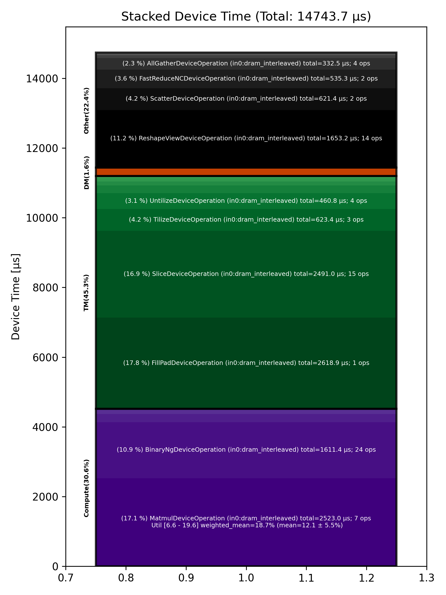

🚀 Performance Report 🚀 ======================== ID Total % Bound OP Code Device Device Time Op-to-Op Gap Cores DRAM DRAM % FLOPs FLOPs % Math Fidelity --------------------------------------------------------------------------------------------------------------------------------------------------------------------------- 25 0.4 % LayerNormDeviceOperation 23 108 μs 1 BF16, BF16 => BF16 57 0.2 % SLOW MatmulDeviceOperation 32 x 2880 x 512 23 44 μs 1 μs 16 39 GB/s 13.4 % 2.2 TFLOPs 6.6 % HiFi2 BF16 x BFP8 => BF16 73 0.1 % ReshapeViewDeviceOperation 7 18 μs 1 μs 72 BF16 => BF16 121 0.0 % SliceDeviceOperation 23 10 μs 1 μs 72 BF16 => BF16 133 0.1 % BinaryNgDeviceOperation 3 28 μs 1 μs 72 BF16, BF16 => BF16 169 0.0 % SliceDeviceOperation 7 9 μs 1 μs 72 BF16 => BF16 222 0.1 % BinaryNgDeviceOperation 28 28 μs 1 μs 72 BF16, BF16 => BF16 233 0.1 % BinaryNgDeviceOperation 7 14 μs 1 μs 72 BF16, BF16 => BF16 278 0.1 % BinaryNgDeviceOperation 20 28 μs 1 μs 72 BF16, BF16 => BF16 311 0.8 % BinaryNgDeviceOperation 21 28 μs 206 μs 72 BF16, BF16 => BF16 335 0.9 % BinaryNgDeviceOperation 13 14 μs 246 μs 72 BF16, BF16 => BF16 361 1.0 % ConcatDeviceOperation 7 12 μs 268 μs 72 BF16, BF16 => BF16 405 2.2 % SLOW MatmulDeviceOperation 32 x 2880 x 64 19 30 μs 607 μs 2 13 GB/s 4.3 % 0.4 TFLOPs 9.6 % HiFi2 BF16 x BFP8 => BF16 447 0.4 % ReshapeViewDeviceOperation 29 5 μs 123 μs 64 BF16 => BF16 479 0.6 % SliceDeviceOperation 29 2 μs 171 μs 32 BF16 => BF16 497 0.9 % PermuteDeviceOperation 15 4 μs 242 μs 32 BF16 => BF16 525 0.4 % BinaryNgDeviceOperation 11 6 μs 114 μs 72 BF16, BF16 => BF16 547 0.6 % SliceDeviceOperation 1 2 μs 162 μs 32 BF16 => BF16 578 0.9 % PermuteDeviceOperation 0 4 μs 240 μs 32 BF16 => BF16 635 0.3 % BinaryNgDeviceOperation 25 6 μs 90 μs 72 BF16, BF16 => BF16 646 0.6 % BinaryNgDeviceOperation 4 3 μs 166 μs 72 BF16, BF16 => BF16 705 0.9 % BinaryNgDeviceOperation 31 6 μs 257 μs 72 BF16, BF16 => BF16 721 0.9 % BinaryNgDeviceOperation 15 6 μs 246 μs 72 BF16, BF16 => BF16 766 0.3 % BinaryNgDeviceOperation 28 3 μs 91 μs 72 BF16, BF16 => BF16 793 0.6 % ConcatDeviceOperation 23 2 μs 164 μs 64 BF16, BF16 => BF16 822 1.0 % InterleavedToShardedDeviceOperation 20 1 μs 297 μs 32 BF16 => BF16 836 0.8 % PagedUpdateCacheDeviceOperation 2 5 μs 237 μs 32 BF16, BF16 => BF16 883 2.0 % SLOW MatmulDeviceOperation 32 x 2880 x 64 17 30 μs 534 μs 2 13 GB/s 4.3 % 0.4 TFLOPs 9.6 % HiFi2 BF16 x BFP8 => BF16 905 0.4 % ReshapeViewDeviceOperation 7 5 μs 99 μs 64 BF16 => BF16 947 0.7 % PermuteDeviceOperation 17 5 μs 185 μs 64 BF16 => BF16 965 0.9 % InterleavedToShardedDeviceOperation 3 1 μs 259 μs 32 BF16 => BF16 1023 0.8 % PagedUpdateCacheDeviceOperation 29 5 μs 222 μs 32 BF16, BF16 => BF16 1048 0.4 % PermuteDeviceOperation 22 9 μs 107 μs 72 BF16 => BF16 1077 1.1 % SdpaDecodeDeviceOperation 19 18 μs 304 μs 72 BF16, BF16 => BF16 1099 0.5 % InterleavedToShardedDeviceOperation 9 1 μs 136 μs 32 BF16 => BF16 1151 0.8 % NLPConcatHeadsDecodeDeviceOperation 29 4 μs 233 μs 8 BF16 => BF16 1161 0.9 % ShardedToInterleavedDeviceOperation 7 1 μs 265 μs 8 BF16 => BF16 1206 2.1 % SLOW MatmulDeviceOperation 32 x 512 x 2880 20 15 μs 594 μs 45 112 GB/s 39.0 % 6.3 TFLOPs 13.6 % HiFi4 BF16 x BFP8 => BF16 1218 1.6 % AllGatherDeviceOperation 0 72 μs 390 μs 24 BF16 => BF16 1269 0.2 % FastReduceNCDeviceOperation 19 10 μs 56 μs 72 BF16 => BF16 1294 0.7 % BinaryNgDeviceOperation 12 5 μs 188 μs 72 BF16, BF16 => BF16 1322 1.5 % ReshapeViewDeviceOperation 8 83 μs 341 μs 72 BF16 => BF16 1369 0.9 % BinaryNgDeviceOperation 23 86 μs 178 μs 72 BF16, BF16 => BF16 1387 1.0 % LayerNormDeviceOperation 9 124 μs 162 μs 32 BF16, BF16 => BF16 1427 0.6 % ReshapeViewDeviceOperation 17 54 μs 116 μs 72 BF16 => BF16 1443 0.2 % UntilizeDeviceOperation 1 15 μs 45 μs 45 BF16 => BF16 1474 0.7 % RepeatDeviceOperation 0 60 μs 138 μs 72 BF16 => BF16 1506 0.8 % TilizeDeviceOperation 0 208 μs 34 μs 45 BF16 => BF16 1552 5.8 % DRAM MatmulDeviceOperation 32 x 2880 x 5760 14 1,423 μs 231 μs 60 193 GB/s 66.9 % 11.9 TFLOPs 19.4 % HiFi4 BF16 x BFP8 => BF16 1589 0.3 % BinaryNgDeviceOperation 19 83 μs 1 μs 72 BF16, BF16 => BF16 1602 0.8 % UntilizeDeviceOperation 0 219 μs 1 μs 60 BF16 => BF16 1643 4.2 % SliceDeviceOperation 9 1,194 μs 1 μs 72 BF16 => BF16 1697 0.7 % TilizeDeviceOperation 31 208 μs 1 μs 45 BF16 => BF16 1716 0.1 % UnaryDeviceOperation 18 35 μs 1 μs 72 BF16 => BF16 1731 0.1 % BinaryNgDeviceOperation 1 39 μs 1 μs 72 BF16, BF16 => BF16 1776 0.8 % UntilizeDeviceOperation 14 221 μs 1 μs 60 BF16 => BF16 1795 4.2 % SliceDeviceOperation 1 1,193 μs 1 μs 72 BF16 => BF16 1826 0.7 % TilizeDeviceOperation 0 208 μs 1 μs 45 BF16 => BF16 1869 0.1 % UnaryDeviceOperation 11 35 μs 1 μs 72 BF16 => BF16 1897 0.1 % BinaryNgDeviceOperation 7 42 μs 1 μs 72 BF16, BF16 => BF16 1946 0.2 % UnaryDeviceOperation 24 54 μs 1 μs 72 BF16 => BF16 1960 0.2 % BinaryNgDeviceOperation 6 49 μs 1 μs 72 BF16, BF16 => BF16 1997 0.2 % BinaryNgDeviceOperation 11 49 μs 1 μs 72 BF16, BF16 => BF16 2025 3.3 % SLOW MatmulDeviceOperation 32 x 2880 x 2880 7 939 μs 1 μs 45 148 GB/s 51.3 % 9.0 TFLOPs 19.6 % HiFi4 BF16 x BFP8 => BF16 2079 0.2 % BinaryNgDeviceOperation 29 49 μs 1 μs 72 BF16, BF16 => BF16 2091 4.3 % ReshapeViewDeviceOperation 9 1,240 μs 1 μs 72 BF16 => BF16 2137 0.4 % TypecastDeviceOperation 23 106 μs 1 μs 72 BF16 => FP32 2171 0.3 % ReshapeViewDeviceOperation 25 89 μs 1 μs 72 FP32 => FP32 2181 0.2 % SLOW MatmulDeviceOperation 32 x 2880 x 128 3 43 μs 1 μs 4 18 GB/s 6.1 % 0.6 TFLOPs 6.7 % HiFi2 FP32 x BFP8 => FP32 2218 0.0 % TypecastDeviceOperation 8 3 μs 1 μs 4 FP32 => BF16 2272 0.3 % TopKDeviceOperation 30 80 μs 2 μs 1 BF16 => BF16 2305 0.0 % SliceDeviceOperation 31 1 μs 2 μs 1 BF16 => BF16 2321 0.0 % SliceDeviceOperation 15 1 μs 2 μs 1 UINT16 => UINT16 2343 0.0 % TypecastDeviceOperation 5 2 μs 2 μs 1 UINT16 => INT32 2400 0.0 % ReshapeViewDeviceOperation 30 9 μs 1 μs 32 INT32 => INT32 2432 0.0 % UntilizeWithUnpaddingDeviceOperation 30 5 μs 1 μs 32 INT32 => INT32 2456 0.0 % UntilizeWithUnpaddingDeviceOperation 22 5 μs 1 μs 32 INT32 => INT32 2481 0.0 % PermuteDeviceOperation 15 4 μs 1 μs 32 INT32 => INT32 2523 0.0 % PermuteDeviceOperation 25 4 μs 1 μs 32 INT32 => INT32 2536 0.0 % ConcatDeviceOperation 6 3 μs 1 μs 64 INT32, INT32 => INT32 2586 0.0 % PermuteDeviceOperation 24 4 μs 1 μs 32 INT32 => INT32 2610 0.0 % TilizeWithValPaddingDeviceOperation 16 9 μs 1 μs 32 INT32 => INT32 2645 0.1 % SoftmaxDeviceOperation 19 25 μs 1 μs 72 BF16 => BF16 2658 0.3 % AllGatherDeviceOperation 0 87 μs 1 μs 24 INT32 => INT32 2690 0.0 % AllGatherDeviceOperation 0 11 μs 1 μs 8 BF16 => BF16 2753 0.0 % ReshapeViewDeviceOperation 31 11 μs 1 μs 16 INT32 => INT32 2759 0.0 % SliceDeviceOperation 5 3 μs 1 μs 16 INT32 => INT32 2814 0.1 % UntilizeWithUnpaddingDeviceOperation 28 15 μs 1 μs 16 INT32 => INT32 2825 0.5 % SliceDeviceOperation 7 6 μs 140 μs 72 INT32 => INT32 2855 0.8 % TilizeWithValPaddingDeviceOperation 5 8 μs 229 μs 16 INT32 => INT32 2896 0.4 % BinaryNgDeviceOperation 14 13 μs 110 μs 72 INT32, INT32 => INT32 2925 0.5 % BinaryNgDeviceOperation 11 4 μs 152 μs 72 INT32, INT32 => INT32 2960 0.9 % ReshapeViewDeviceOperation 14 7 μs 251 μs 16 INT32 => INT32 3001 0.9 % ReshapeViewDeviceOperation 23 4 μs 244 μs 16 BF16 => BF16 3037 0.3 % UntilizeWithUnpaddingDeviceOperation 27 11 μs 88 μs 1 INT32 => INT32 3065 0.5 % SliceDeviceOperation 23 1 μs 156 μs 1 INT32 => INT32 3089 0.5 % TilizeWithValPaddingDeviceOperation 15 44 μs 95 μs 1 INT32 => INT32 3106 0.8 % UntilizeWithUnpaddingDeviceOperation 0 10 μs 211 μs 1 BF16 => BF16 3159 0.3 % SliceDeviceOperation 21 1 μs 75 μs 1 BF16 => BF16 3179 0.6 % TilizeWithValPaddingDeviceOperation 9 23 μs 156 μs 1 BF16 => BF16 3225 0.3 % UntilizeWithUnpaddingDeviceOperation 23 7 μs 76 μs 1 INT32 => INT32 3247 0.8 % UntilizeWithUnpaddingDeviceOperation 13 6 μs 215 μs 1 BF16 => BF16 3290 1.4 % ScatterDeviceOperation 24 313 μs 89 μs 1 BF16, INT32 => BF16 3311 0.1 % TilizeWithValPaddingDeviceOperation 13 32 μs 1 μs 64 BF16 => BF16 3360 0.4 % UntilizeWithUnpaddingDeviceOperation 30 12 μs 90 μs 1 INT32 => INT32 3387 0.8 % SliceDeviceOperation 25 1 μs 229 μs 1 INT32 => INT32 3400 0.5 % TilizeWithValPaddingDeviceOperation 6 44 μs 93 μs 1 INT32 => INT32 3447 0.5 % UntilizeWithUnpaddingDeviceOperation 21 10 μs 138 μs 1 BF16 => BF16 3472 0.3 % SliceDeviceOperation 14 1 μs 73 μs 1 BF16 => BF16 3518 0.7 % TilizeWithValPaddingDeviceOperation 28 23 μs 176 μs 1 BF16 => BF16 3531 0.3 % UntilizeWithUnpaddingDeviceOperation 9 7 μs 69 μs 1 INT32 => INT32 3570 0.6 % UntilizeWithUnpaddingDeviceOperation 16 6 μs 161 μs 1 BF16 => BF16 3592 0.3 % UntilizeWithUnpaddingDeviceOperation 6 10 μs 83 μs 64 BF16 => BF16 3641 1.7 % ScatterDeviceOperation 23 309 μs 169 μs 1 BF16, INT32 => BF16 3672 0.1 % TilizeWithValPaddingDeviceOperation 22 32 μs 1 μs 64 BF16 => BF16 3706 0.1 % ReshapeViewDeviceOperation 24 25 μs 1 μs 16 BF16 => BF16 3728 0.7 % MeshPartitionDeviceOperation 14 1 μs 195 μs 4 BF16 => BF16 3764 0.5 % UntilizeDeviceOperation 18 6 μs 140 μs 1 BF16 => BF16 3786 2.4 % MeshPartitionDeviceOperation 8 2 μs 694 μs 32 BF16 => BF16 3837 0.4 % TilizeWithValPaddingDeviceOperation 27 4 μs 107 μs 1 BF16 => BF16 3854 0.6 % TransposeDeviceOperation 12 2 μs 179 μs 72 BF16 => BF16 3879 0.5 % ReshapeViewDeviceOperation 5 50 μs 102 μs 72 BF16 => BF16 3919 3.8 % BinaryNgDeviceOperation 13 938 μs 137 μs 72 BF16, BF16 => BF16 3938 9.1 % FillPadDeviceOperation 0 2,619 μs 1 μs 72 BF16 => BF16 3979 1.8 % FastReduceNCDeviceOperation 9 526 μs 1 μs 72 BF16 => BF16 4008 0.2 % SliceDeviceOperation 6 65 μs 1 μs 72 BF16 => BF16 4034 0.8 % ReduceScatterDeviceOperation 0 227 μs 1 μs 24 BF16 => BF16 4066 0.6 % AllGatherDeviceOperation 0 162 μs 1 μs 40 BF16 => BF16 4098 0.3 % BinaryNgDeviceOperation 0 85 μs 1 μs 72 BF16, BF16 => BF16 4130 0.2 % ReshapeViewDeviceOperation 0 53 μs 1 μs 72 BF16 => BF16 --------------------------------------------------------------------------------------------------------------------------------------------------------------------------- 100.0 % 130 device ops, 0 host ops, 0 signposts 14,744 μs 13,908 μs 📊 Stacked report 📊 ==================== Total % Op Code Device Time Sum Op Count Op Category Min FLOPs Max FLOPs Mean FLOPs Std FLOPs Weighted Mean FLOPs ------------------------------------------------------------------------------------------------------------------------------------------------------------------------------ 17.76 % FillPadDeviceOperation (in0:dram_interleaved) 2,618.86 μs 1 TM 17.11 % MatmulDeviceOperation (in0:dram_interleaved) 2,523.05 μs 7 Compute 6.56 % 19.57 % 12.14 % 5.51 % 18.73 % 16.90 % SliceDeviceOperation (in0:dram_interleaved) 2,491.02 μs 15 TM 11.21 % ReshapeViewDeviceOperation (in0:dram_interleaved) 1,653.19 μs 14 Other 10.93 % BinaryNgDeviceOperation (in0:dram_interleaved) 1,611.44 μs 24 Compute 4.23 % TilizeDeviceOperation (in0:dram_interleaved) 623.43 μs 3 TM 4.21 % ScatterDeviceOperation (in0:dram_interleaved) 621.39 μs 2 Other 3.63 % FastReduceNCDeviceOperation (in0:dram_interleaved) 535.25 μs 2 Other 3.13 % UntilizeDeviceOperation (in0:dram_interleaved) 460.76 μs 4 TM 2.26 % AllGatherDeviceOperation (in0:dram_interleaved) 332.52 μs 4 Other 1.57 % LayerNormDeviceOperation (in0:dram_interleaved) 232.20 μs 2 Compute 1.54 % ReduceScatterDeviceOperation (in0:dram_interleaved) 226.63 μs 1 DM 1.49 % TilizeWithValPaddingDeviceOperation (in0:dram_interleaved) 220.10 μs 9 TM 0.84 % UnaryDeviceOperation (in0:dram_interleaved) 123.33 μs 3 Compute 0.75 % TypecastDeviceOperation (in0:dram_interleaved) 110.47 μs 3 TM 0.69 % UntilizeWithUnpaddingDeviceOperation (in0:dram_interleaved) 101.73 μs 12 TM 0.54 % TopKDeviceOperation (in0:dram_interleaved) 79.56 μs 1 Other 0.41 % RepeatDeviceOperation (in0:dram_interleaved) 60.28 μs 1 Other 0.23 % PermuteDeviceOperation (in0:dram_interleaved) 34.61 μs 7 TM 0.17 % SoftmaxDeviceOperation (in0:dram_interleaved) 25.19 μs 1 Compute 0.12 % SdpaDecodeDeviceOperation (in0:dram_interleaved) 18.27 μs 1 Other 0.12 % ConcatDeviceOperation (in0:dram_interleaved) 17.01 μs 3 TM 0.07 % PagedUpdateCacheDeviceOperation (in0:dram_interleaved) 9.65 μs 2 DM 0.03 % InterleavedToShardedDeviceOperation (in0:dram_interleaved) 4.14 μs 3 DM 0.03 % NLPConcatHeadsDecodeDeviceOperation (in0:height_sharded) 3.72 μs 1 TM 0.02 % MeshPartitionDeviceOperation (in0:dram_interleaved) 3.07 μs 2 Other 0.01 % TransposeDeviceOperation (in0:dram_interleaved) 1.79 μs 1 TM 0.01 % ShardedToInterleavedDeviceOperation (in0:width_sharded) 0.98 μs 1 DM ------------------------------------------------------------------------------------------------------------------------------------------------------------------------------
